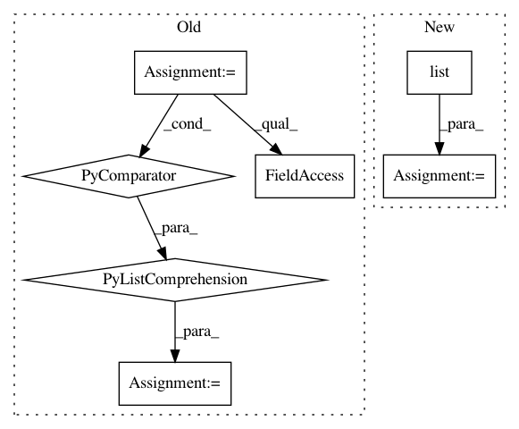

3e12d49324793d4798ee10bb6ef6a1c1b7633baf,python/caffe/pycaffe.py,,_Net_forward,#,37
Before Change
blobs = []
if start is not None:
start_ind = [lr.name for lr in self.layers].index(start)
else:
start_ind = 0
if end is not None:
After Change
start_ind = 0
if end is not None:
end_ind = list(self._layer_names).index(end)
outputs = set([end] + blobs)
else:
end_ind = len(self.layers) - 1
outputs = set(self.outputs + blobs)
In pattern: SUPERPATTERN
Frequency: 3
Non-data size: 7
Instances
Project Name: BVLC/caffe
Commit Name: 3e12d49324793d4798ee10bb6ef6a1c1b7633baf
Time: 2014-09-01
Author: jonlong@cs.berkeley.edu
File Name: python/caffe/pycaffe.py
Class Name:
Method Name: _Net_forward
Project Name: comic/grand-challenge.org
Commit Name: a4325faecbd2a82e355036fc75869b9ce05afffa
Time: 2019-12-10
Author: 57257130+MikeOverkamp-diag@users.noreply.github.com
File Name: app/grandchallenge/evaluation/emails.py
Class Name:
Method Name: send_new_result_email
Project Name: BVLC/caffe
Commit Name: 3e12d49324793d4798ee10bb6ef6a1c1b7633baf
Time: 2014-09-01
Author: jonlong@cs.berkeley.edu
File Name: python/caffe/pycaffe.py
Class Name:
Method Name: _Net_backward